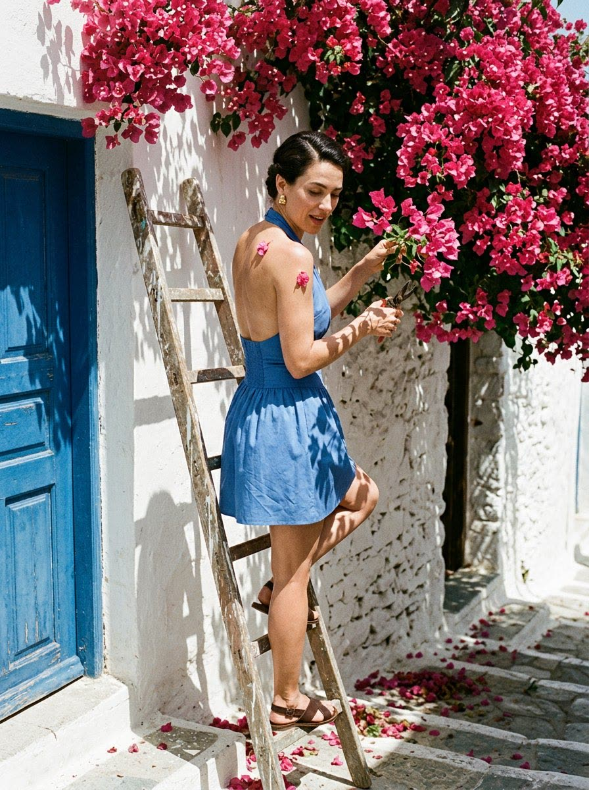

Greek-island alley editorial: woman on a paint-marked ladder under a fuchsia bougainvillea, harsh midday leaf shadows on chalk-white walls
AES-094Aesthetic / GenreNano Banana 2by @dreamydigiarts2026-11-20

A Nano Banana 2 (WeryAI) editorial built on a strong place-and-light aesthetic: cobalt door against limewashed white, a ceiling of fuchsia flowers pressing in on the frame, hard Mediterranean sun throwing leaf-and-flower shadows across wall, skin and dress. The framing is specified (from just below the knee, shot from below ladder height, slightly off-axis, doorway cutting one edge) and the expression is a story beat ("as if interrupted halfway through the task").
Prompt
fashion editorial in a narrow Greek island alley at harsh midday, with chalk-white stone walls, a weathered cobalt door, and an enormous fuchsia bougainvillea spilling overhead. An adult woman stands midway up a paint-marked wooden ladder, framed from just below the knee upward so she remains dominant while the flowers press tightly around the top and sides of the image. She wears an blue poplin halter dress with a close sculpted waist, broad open back, and a short softly structured skirt, paired with dark brown leather sandals and small hammered-gold earrings. Style her hair in a compact low twist with an irregular side part, leaving the neck and shoulders clear. One hand steadies the ladder while the other holds a small pair of garden shears beside a freshly cut bougainvillea branch. Loose petals cling to one shoulder and scatter across the stone below. She turns down toward the camera with a slightly breathless, amused expression, as if interrupted halfway through the task. Photograph from close below ladder height, slightly off-axis, with the cobalt doorway cutting into one edge of the frame and dense flowers filling the opposite side. Hard Mediterranean sun creates sharp leaf-and-flower shadows across the white wall, her bare shoulders, and the dress. Preserve sun-faded paint, limewashed stone, dry petals, cotton structure, worn ladder wood, natural skin, and restrained film grain.
Our Seedance 2.5 adaptation
[ADAPTED for Seedance 2.5 by Grok Bot; not the creator's prompt. Follows the official BytePlus Seedance 2.5 prompt guide and its official sd25-pe prompt-optimizer skill: parameters only on the API line (not in the prompt body), subject + action + scene, then visuals, camera (move, subject, start, direction, arrival) and sound; only the source's own exclusions are kept.] API: duration 5, ratio 3:4 (taken from the first frame), resolution 1080p (4k for a final), generate_audio true; first_frame = the AES-094 still. 【Subject】The adult woman exactly as in the first frame: compact low twist, blue poplin halter dress, dark brown leather sandals, small hammered-gold earrings, garden shears in one hand. 【Action】She snips one bougainvillea stem; loose petals fall past her shoulder onto the stone, then she glances down at the camera with a breathless, amused half-laugh. 【Scene】The narrow whitewashed Greek-island alley, weathered cobalt door at one edge and the fuchsia bougainvillea pressing in overhead, unchanged. 【Camera】Low angle from below ladder height, slightly off-axis; static with a very slight upward tilt as the petals fall. 【Visuals】Hard midday Mediterranean sun with sharp leaf-and-flower shadows that sway a little in the breeze; limewashed texture, natural skin, restrained film grain. 【Sound】A light breeze in the leaves, the snip of the shears, distant cicadas.
Tags: Nano Banana 2, WeryAI, Mediterranean, harsh midday sun, leaf shadows, cobalt + fuchsia, low angle, off-axis framing, editorial, restrained film grain, image